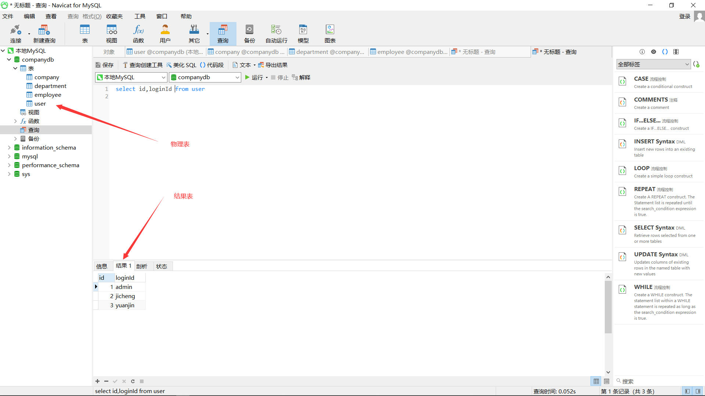
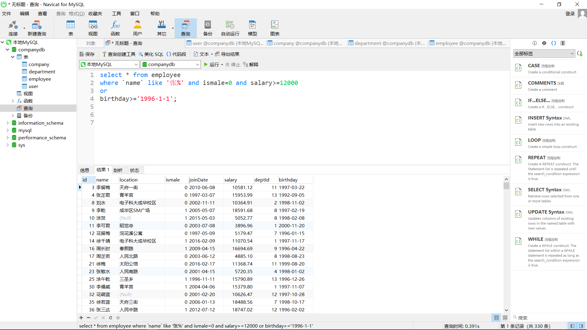

一、思维导图

二、查询结果表在内存，物理表在硬盘

三、select
语法：
select id,loginId,loginPwd from user别名：
select ismale as 性别 from employee查询所有列：
select * from employee

- 去重：
select distinct location,id from employee
- distinct：一定要放在select最前面，指的是后面的查询(location id)都相同的才去重
- case：
- 写法一
select id,`name`, |
- 写法二
select id,`name`, |
- 多个case同时使用
select id,`name`, |
四、where
- 下面代码报错，执行顺序依次是from where select，在执行where时表中还没有sex字段
select *, |
4.1 in
select * from department |
4.2 is/is not
- 专门用来选择字段值为null的记录
select * from employee |

4.3 between
select * from employee |
4.4 like
- 查找name字段中带有’袁’字的记录
select * from employee |
- 查找name字段长度为2，以’袁’开头的记录
select * from employee |
4.5 and
select * from employee |
4.6 or
select * from employee |

五、order by
- 正常排序
select * from employee |
- 进一步排序：在性别相同的情况下，按salary降序排序
select *, |
六、limit
select * from employee |

练习
登录查询：查询user表，得到账号admin，密码为123456的用户
查询员工表，按照员工的入职时间降序排序，并且使用分页查询，查询第3页，每页5条数据
查询工资最高的女员工
-- 1. 登录查询：查询user表，得到账号admin，密码为123123的用户 |